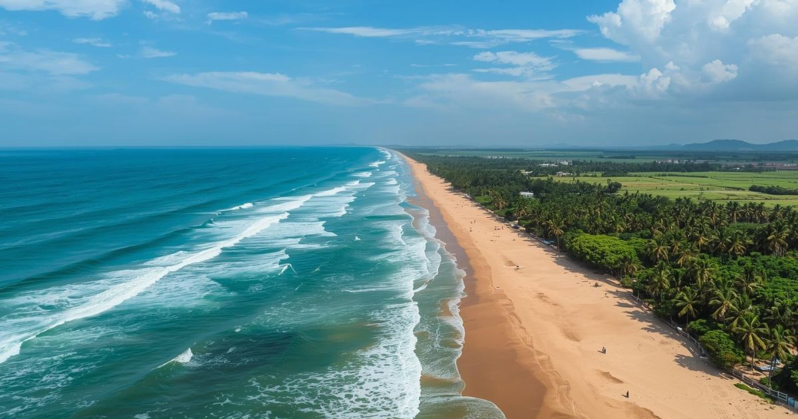
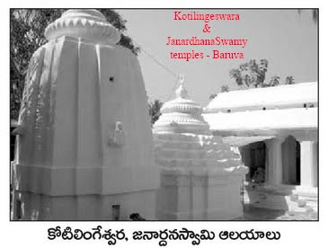
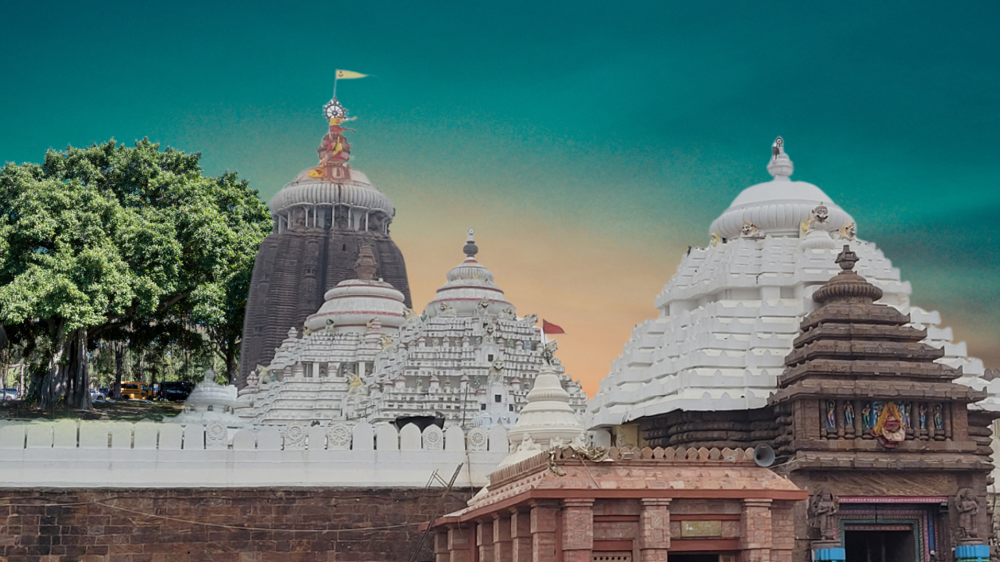
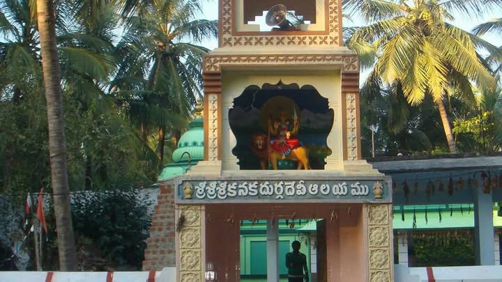
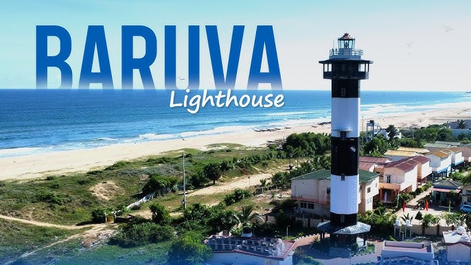
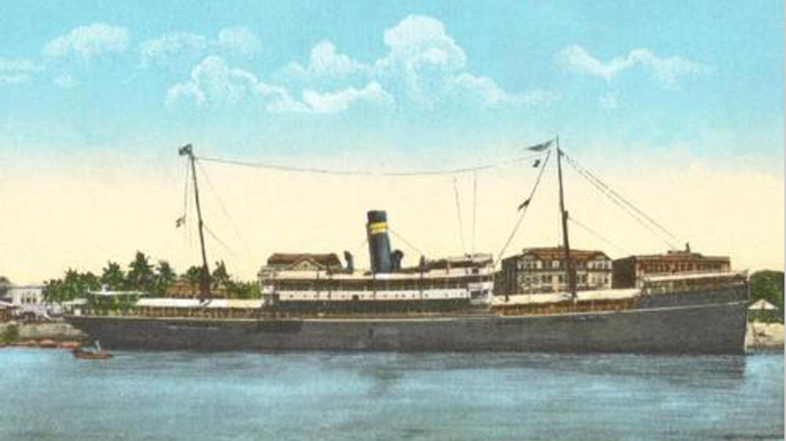
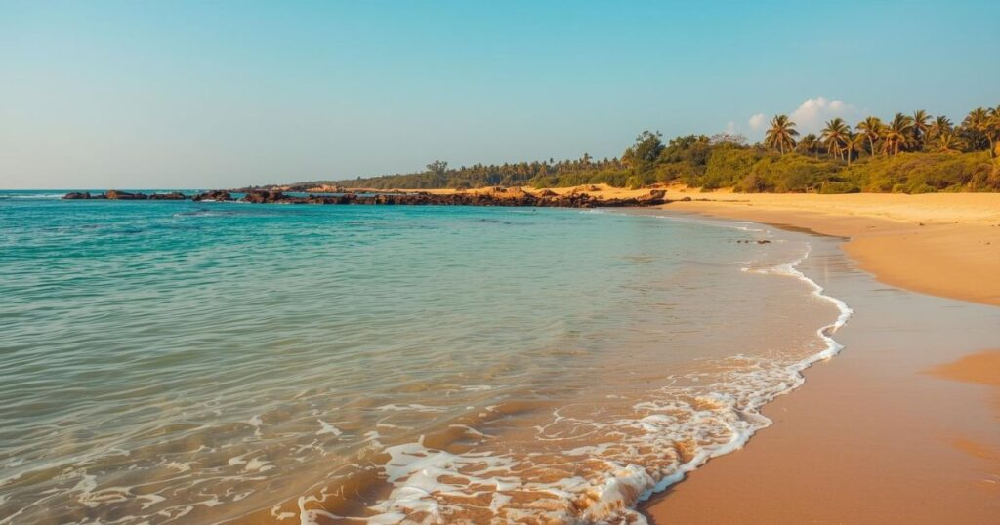
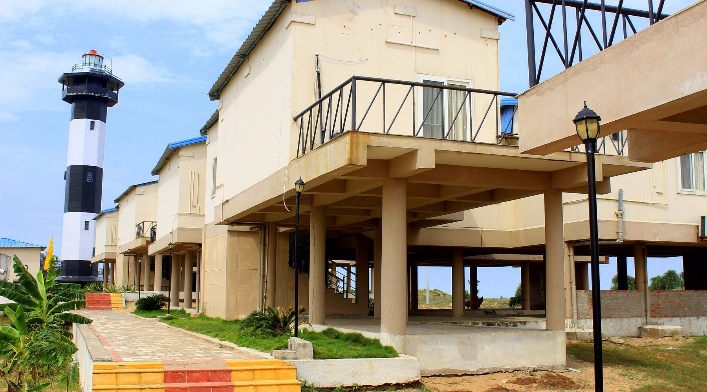

Discover Baruva – Beach • Temples • Lighthouse • Heritage
Explore BaruvaBaruva is a historic coastal village located in Sompeta Mandal, Srikakulam District, Andhra Pradesh. Known for its beautiful beach, ancient temples, lighthouse, and the famous SS Chilka shipwreck, Baruva offers a perfect blend of nature, spirituality, and heritage.

Peaceful coconut-lined beach with scenic sunrise views.

Ancient Lord Shiva temple attracting devotees.

Spiritual landmark near the coast.

Popular local goddess temple.

Historic lighthouse with panoramic sea views.

British-era shipwreck visible from shore.
In July 1917, the British cargo ship SS Chilka sank off Baruva Beach. Today, the wreck remains a unique marine tourism attraction and reminder of Baruva’s historical importance as a seaport.
Baruva is known for its traditional festivals, fishing lifestyle, coastal cuisine, and warm hospitality.


Stay at APTDC Haritha Beach Resort, Baruva